Linear Modeling and Logic Unit
4.2 Slope and Rate of Change
For each of the following graphs:
a) Find the slope of the line.
b) Find the unit rate of change and interpret it in context to the information in the graph.
- Circle the letter of each graph that shows a rate of change equal to 1.
m = 1
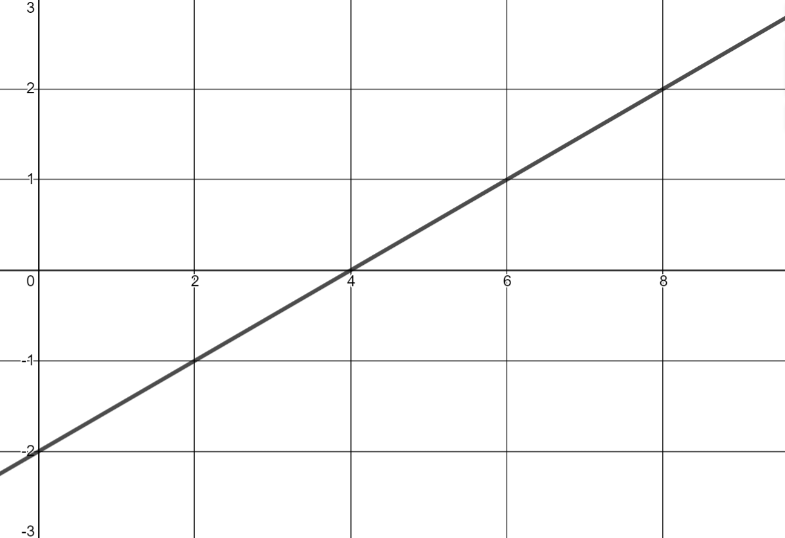
m = 1/2
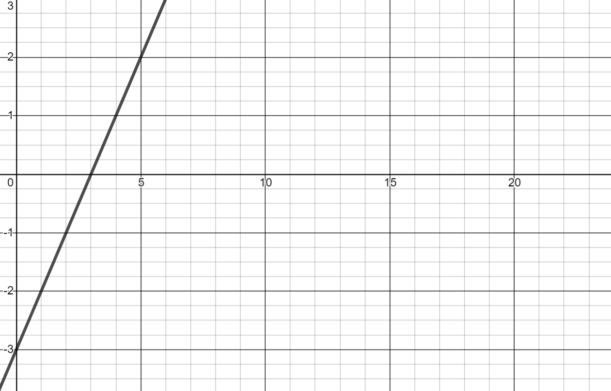
m = 1
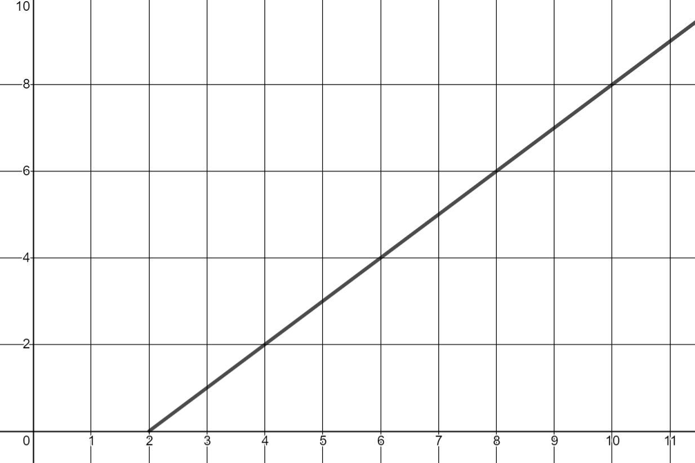
m = 1
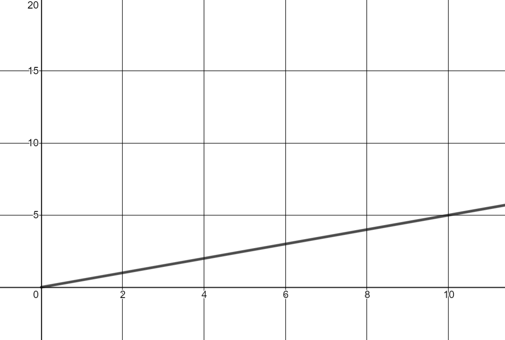
m = 1/2

m = 5/2
m = 1
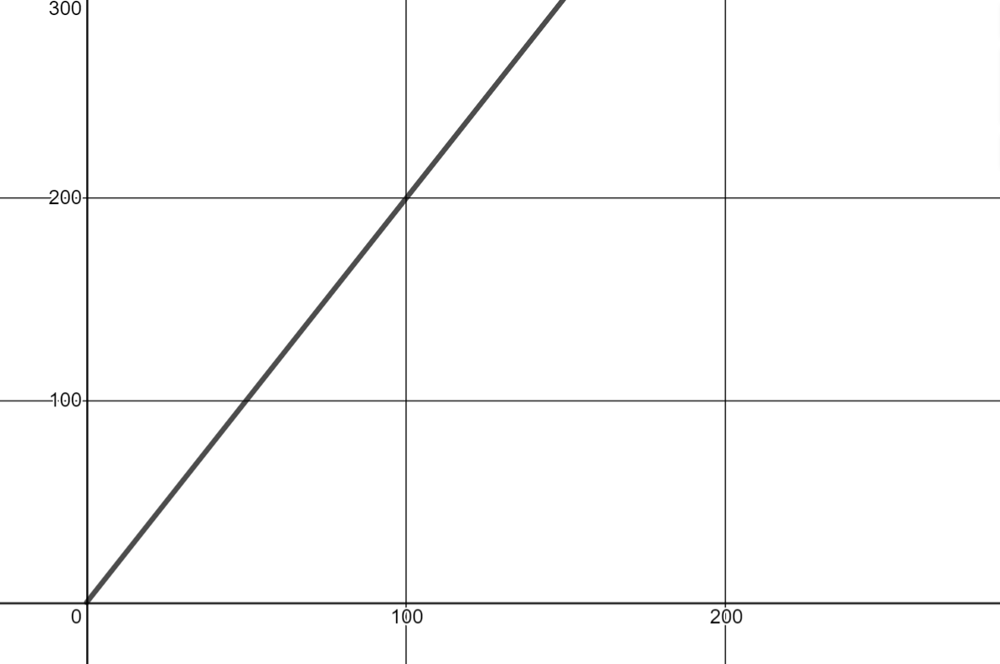
m = 2
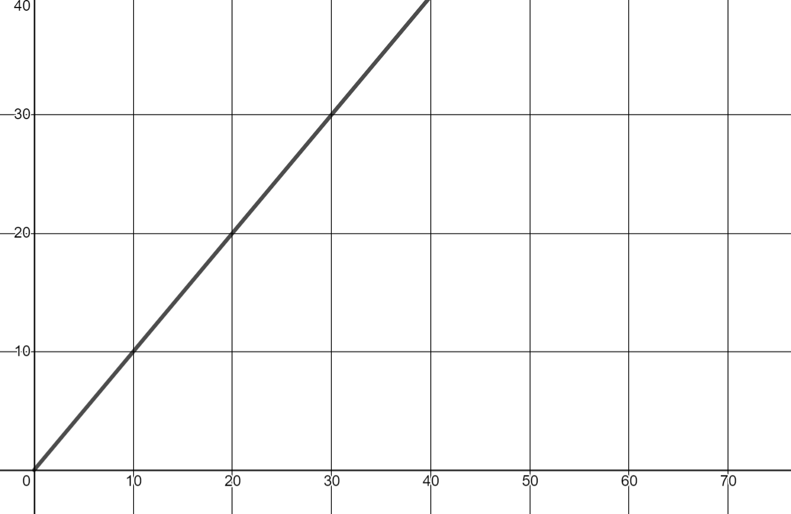
m = 1
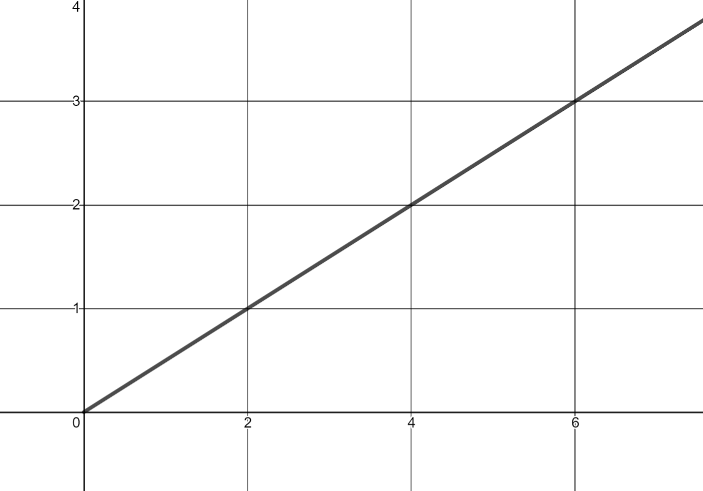
m = 1/2
The graphs whose slopes are equal to 1 are a, c, d, g and i.
Slope = __________
m = -100
Rate of Change = _________________________
The value of the washing machine decreases by $100 per year.
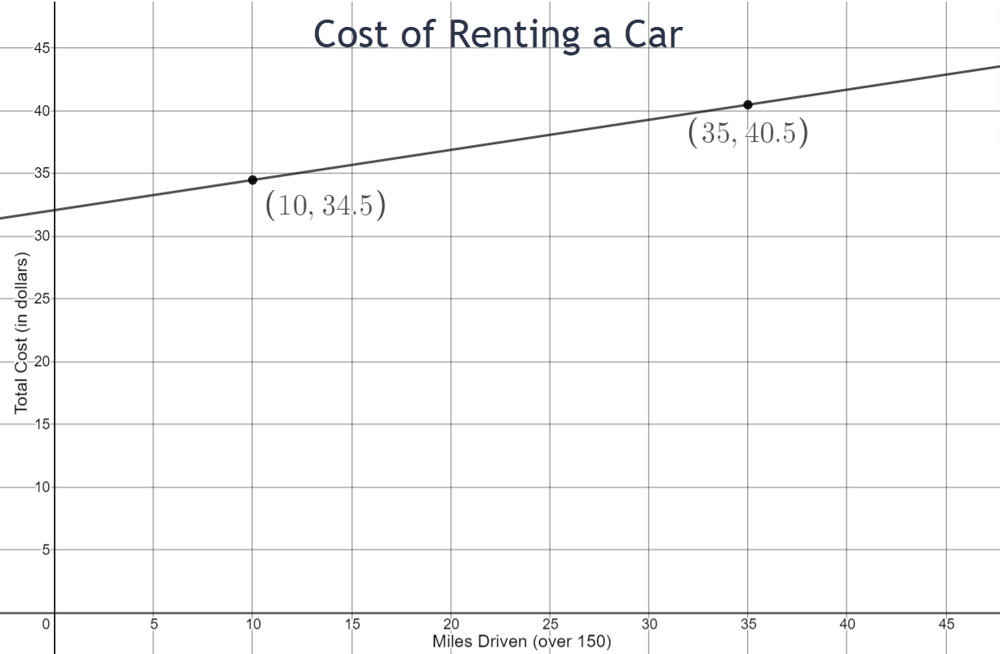
Slope = __________
m = 6/25 = 0.24
Rate of Change = _________________________
After 150 miles, the total cost increases by $0.24 per mile.
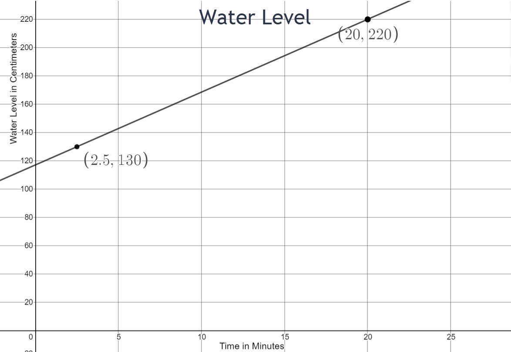
Slope = __________
m = 36/7
Rate of Change = _________________________
The water level increases by approximately 5.1 cm per minute.
Slope = __________
m = -45
Rate of Change = _________________________
The money owed decreases by $45 per month.
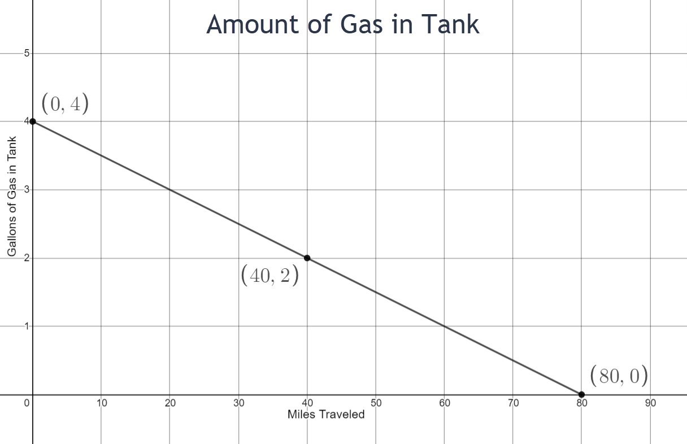
Slope = __________
m = -1/20
Rate of Change = _________________________
The amount of gas in the tank decreases by 0.05 gallons per mile driven.
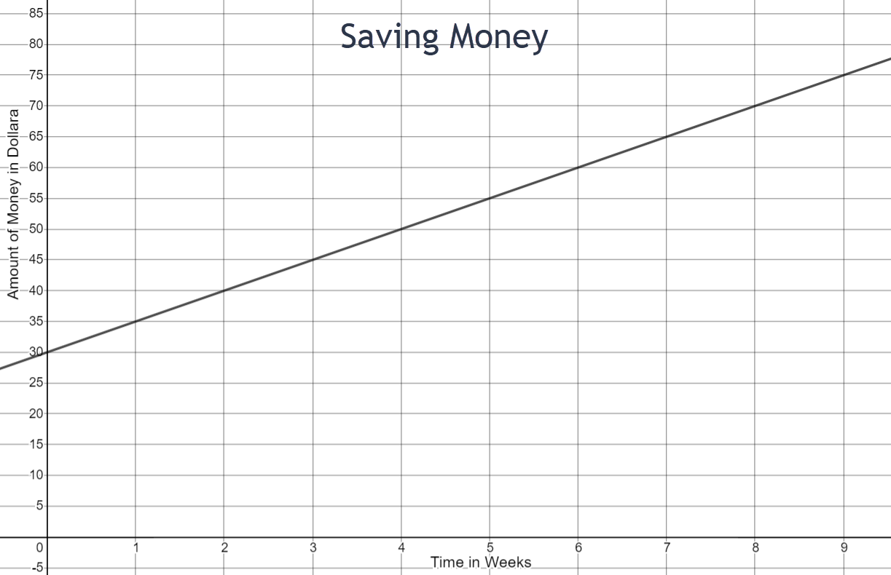
Slope = __________
m = 5
Rate of Change = _________________________
The amount of money saved increases by $5 per week.
Slope = __________
m = -1/20
Rate of Change = _________________________
The distance from home decreases by 0.05 miles per minute.
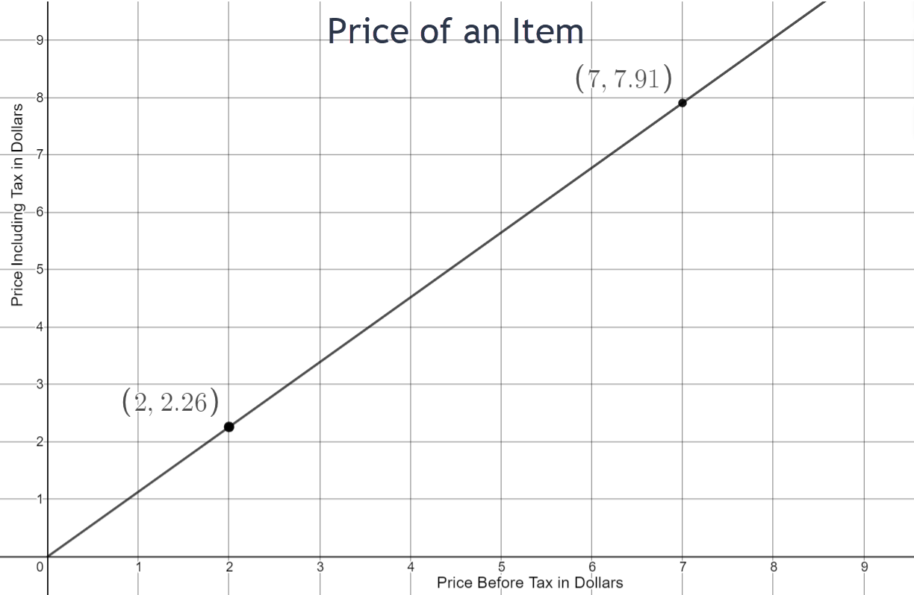
Slope = __________
m = 113/100
Rate of Change = _________________________
The price including the tax increases by $0.13 per dollar spent.